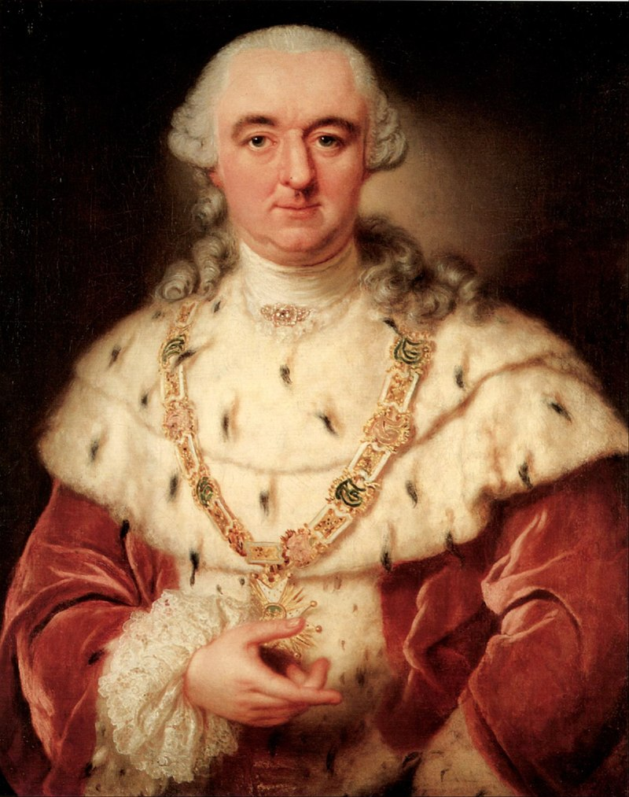
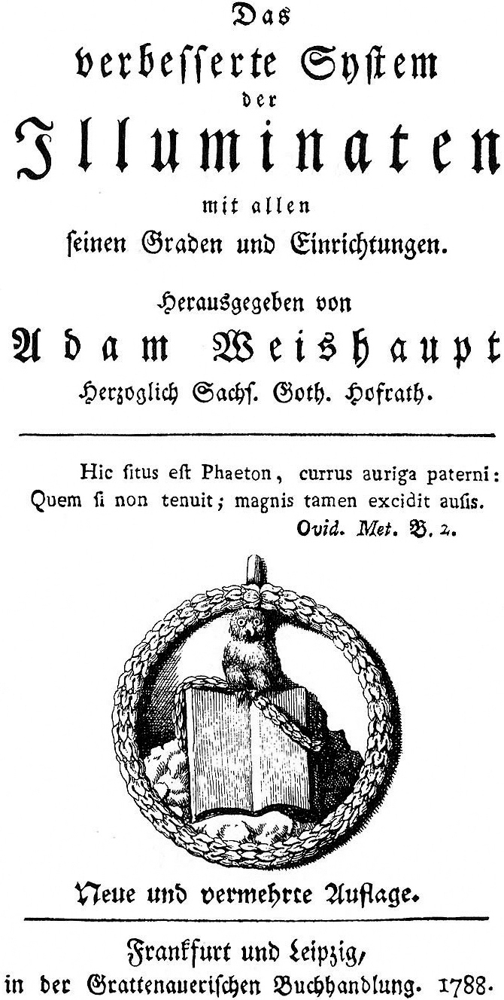
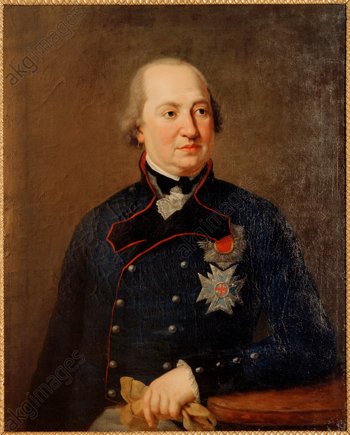
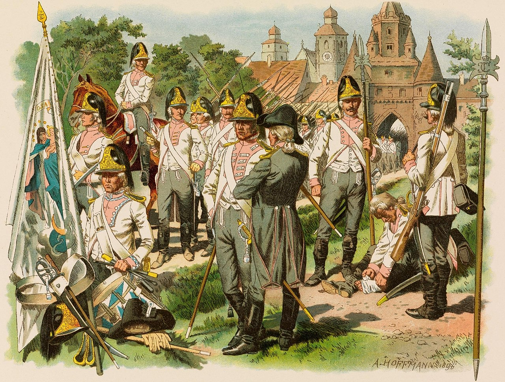
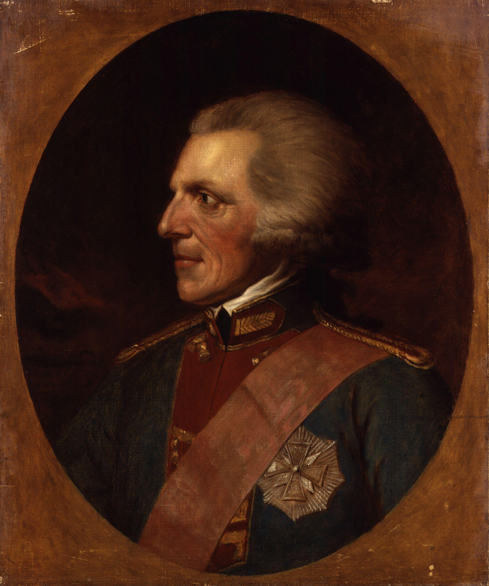
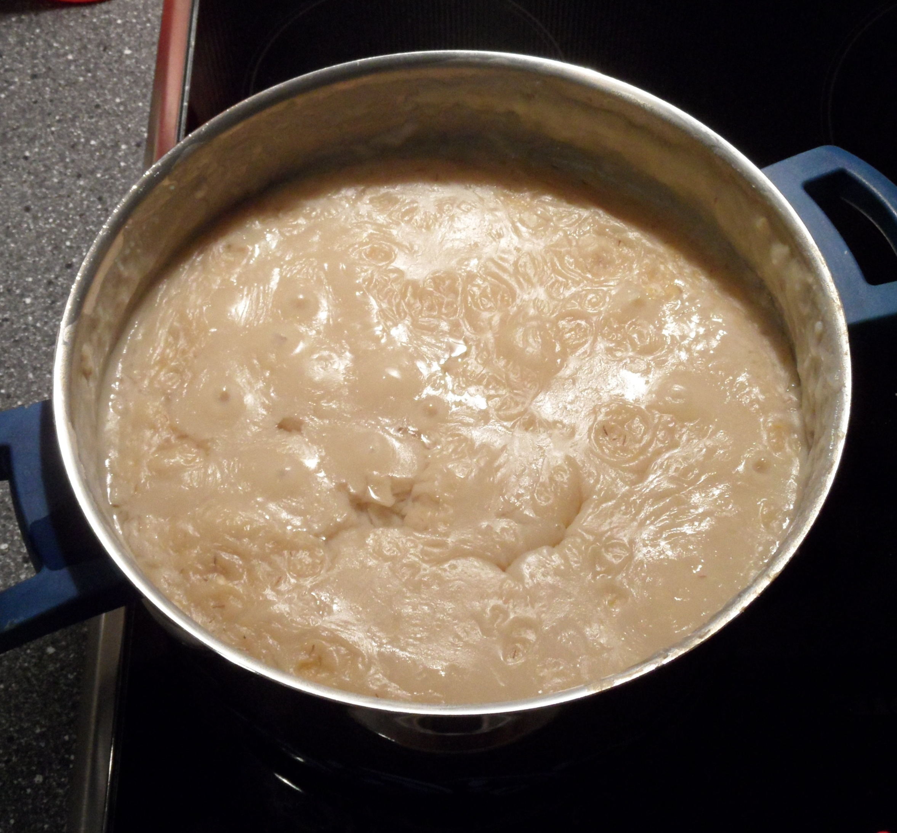

바이에른의 배신 (2) - 럼포드 수프를 먹는 나라
게시: 2024-08-19T06:30:22+09:00
바이에른 공국에게 있어 처음에는 강 건너 불구경이던 프랑스 대혁명은 예상보다 훨씬 더 큰 규모로 활활 불타올라 밀물처럼 국경을 넘었습니다. 1793년 루이 16세와 앙트와넷을 처형한 프랑스 국민공회는 1795년 불한당 같은 명장 모로(Jean Victor Marie Moreau)를 앞세워 평소 그렇게 탐을 내던 라인강 서쪽의 바이에른 고립영토(exclave)이자, 당시 바이에른 선제후였던 카알 테오도어(Karl Theodor)의 고향이자 본거지인 팔츠(Pfalz) 선제후령과 율리히(Jülich) 공작령을 점령했습니다. 거기서 그치지 않고 다음 해인 1796년 모로가 이끄는 프랑스군은 그야말로 파죽지세로 바이에른의 수도 뮌헨까지 점령했는데, 바이에른군은 거의 저항을 하지 않았습니다. 애초에 대국 프랑스에게 저항해봐야 무의미한 희생만 늘 뿐이기도 했지만, 바이에른 선제후 카알 테오도어가 매우 인기없는 군주였기 때문이었습니다.

(바이에른 국민들은 선제후 카알 테어도어를 싫어했지만, 괜찮았습니다. 어차피 카알 테어도어도 바이에른을 좋아하지 않았으니까요.) 카알 테어도어는 바이에른 농민들은 물론 바이에른 시민계급 및 귀족들과도 사이가 좋지 않았습니다. 바이에른 선제후 가문인 비텔슈바흐(Wittelsbach)의 방계로서 원래 팔츠 선제후였던 그는 바이에른 선대 선제후가 후사를 남기지 않고 죽는 바람에 뜻밖에 바이에른 선제후에 올랐는데, 그는 아직 정식 즉위를 하기도 전에 바이에른 남부와 오스트리아령 네덜란드 지방을 교환하자고 합스부르크 가문에 딜을 시도할 정도로 바이에른에 대해 애착이 없었습니다. 그런 교환에 대해 바이에른 귀족들은 물론 프로이센의 강력한 반대에 부딪혀 결국 바이에른 선제후 계승 전쟁까지 치른 뒤에야 선제후에 정식 취임한 카알 테어도어가 바이에른 국민들에게 인기가 있을 리 없었습니다. 특히 프랑스에서 넘어오는 계몽사상에 접하면서 점점 시민계급이 형성되던 바이에른 사회에 대해 카알 테어도어는 오스트리아 합스부르크 가문에만 밀착하여 탄압으로 일관했으므로 더욱 인기가 없었습니다. 그런 보수성으로 인해 바이에른의 계몽화를 위한 비밀결사이던 일루미나티(Illuminati)를 여러차례 적발하여 불법화하기도 했습니다. 그 결과, 모로가 뮌헨에 입성할 때 많은 시민들이 거리로 뛰어나와 마치 해방군을 맞이하듯 환영했다고 합니다.

(라틴어인 일루미나티는 영어로 'enlightened', 즉 계몽된 깨시민을 뜻하는 말입니다. 일루미나티라는 이름은 여러 조직에서 쓰는 이름이지만 역사적으로는 바로 이 바이에른 일루미나티를 뜻하는 것이 보통입니다. 비밀결사라고 하니까 삼합회나 천지회 같은 범죄조직 느낌이 들기는 하지만, 이 결사의 목표는 미신과 반계몽주의, 종교가 공공 생활에 영향을 끼치지 못하도록 하는 것과 권력의 남용을 타도하는 것으로서, 바이에른의 근대화가 궁극적 목표였습니다. 이 그림은 바이에른 일루미나티의 문장으로서 지혜의 여신 미네르바의 올빼미가 책 위에 앉아있는 모습입니다.) 이 사태의 주인공인 카알 테어도어는 그때 무엇을 하고 있었을까요? 그는 애초에 모든 저항을 포기하고 작센으로 도망쳤고, 나중에 대리를 내세워 모로와 협상한 뒤 매우 큰 액수의 조공을 바치기로 하고서야 뮌헨으로 돌아올 수 있었습니다. 하지만 이렇게 인기 없던 군주 카알 테어도어에게도 곧 볕들 날이 옵니다. 불과 3년 뒤인 1799년 2월, 바이에른 국민들은 카알 테어도어를 향해 열렬한 환호를 보냈는데, 이는 그가 75세의 나이로 죽었기 때문이었습니다. 카알 테어도어에게는 적자는 없지만 많은 사생아들이 있었는데, 계승 전쟁을 치른 뒤 그가 바이에른 선제후로 즉위할 때 조건이 그 사생아들은 왕위를 이을 수 없다는 것이었습니다. 그러니까 원래부터 그의 후사는 또다른 방계인 팔츠-츠바이브뤼컨(Pfalz-Zweibrücken, 츠바이브뤼컨은 2개의 다리라는 뜻) 공작으로 정해져 있었던 것입니다. 그리고 당시 츠바이브뤼켄 공작은 당시 43세의 한창 나이였던 막시밀리안 조제프(Maximilian I Joseph)였습니다.

(츠바이브뤼컨 공작 시절의 막시밀리안 조제프입니다.) 새로운 선제후가 된 막시밀리안 조제프의 앞날은 결코 밝지 않았습니다. 전통적인 두 깡패 이웃 오스트리아와 프로이센가 여전히 기세 등등할 뿐만 아니라, 거기에 더하여 원래부터 힘이 더 셌지만 그래도 한 다리 건너 이웃이었던 프랑스가 이젠 완전히 미쳐 날뛰고 있기 때문이었습니다. 특히나 프랑스와 합스부르크 사이에서 바이에른의 운명은 그야말로 풍전등화였습니다. 당장 바이에른 영토엔 오스트리아군이 마치 자기 영토인양 허락도 받지 않고 잔뜩 들어와 있어서, 사실상 바이에른은 독립국가라고 말하기도 어려웠습니다. 이렇게 안보 상황이 좋지 않을 때는 군대가 강력해야 했는데, 바이에른군의 상태는 그야말로 망하기 일보직전이었습니다. 모든 부대가 서류상으로만 그럴싸 했을 뿐 실제 병력은 정원에 훨씬 미치지 못했으며, 지방마다 뿔뿔이 흩어져 배치되어 있어 훈련도 하지 않고 있었으며, 바이에른군의 유명한 럼포드(Rumford) 제복은 모양만 이쁠 뿐 불편하고 비실용적이라서 모든 병사들이 싫어했습니다.

(바이에른군의 군복을 럼포드(Rumford) 제복이라고 부릅니다. 독일권 나라의 옷에 영국식 이름이 붙은 이유는 이 제복의 디자이너가 바로 미국 태생 영국 군인인 벤자민 톰슨(Benjamin Thompson), 즉 럼포드 백작(Count Rumford)이기 때문입니다. 럼포드 제복의 가장 두드러지는 특징은 가죽으로 만든 헬멧에 말총 장식이 달려있다는 것인데 병사들은 저 헬멧을 럼포드의 장식품(Rumford Casket)이라고 불렀습니다.)

(럼포드 제복을 디자인한 럼포드 백작 벤자민 톰슨은 아메리카 식민지에서 태어나고 자란 미국인이었습니다. 그는 귀족이 아니었으나 부유한 미망인 사라 롤프(Sarah Rolfe)와 결혼하면서 상당한 자산가가 된 관계로 독립전쟁의 계기가 된 뉴잉글랜드의 반란에 반대했었습니다. 아이러니컬 하게도, 그는 왕당파로서 미국 독립군에 대항하여 싸우면서 와이프를 버리고 영국군으로 귀순하여 영국군에게 협조했습니다. 그는 1783년 미국 독립 이후 영국으로 옮겨가 발명가 및 과학자로서 활동하다 1785년 바이에른으로 가서 카알 테어도어의 참모로 11년간 일했습니다. 아마 눈치 빠른 분은 럼포드 백작 (Count Rumford)이라는 작위에서 이상한 점을 느끼셨을 것입니다. 영국의 백작은 count가 아니라 earl이거든요. 맞습니다. 벤자민 톰슨이 받은 작위는 영국에서 받은 것이 아니라 1791년 바이에른에서 받은 것이라서 earl이 아니라 count인 것입니다. 보통 작위를 받을 때 작위명은 자신이 직접 정하는 법인데, 벤자민 톰슨은 희한하게도 자신이 버린 와이프와 결혼식을 올렸던 미국 뉴햄프셔의 마을인 럼포드를 그 이름으로 택했습니다.) 경제 사정이 좋으냐하면 그것도 아니었습니다. 지금이야 바이에른은 BMW, 알리안츠(Allianz), 지멘스(Siemens) 등을 앞세워 독일 내에서도 가장 부유한 지방이지만, 당시에는 전혀 부유한 지방이 아니었습니다. 위에서 언급한 럼포드 제복을 다자인한 럼포드 백작이 바이에른에서 한 여러가지 일들 중에서 중요한 것 하나가 가난한 사람들을 위한 구빈원을 세우고 그들에게 먹일 구황식, 즉 럼포드 수프(Rumfordsche Suppe)를 만든 것이었습니다. 그만큼 바이에른에는 빈민들이 많았고, 세금 낼 사람이 부족하니 세수도 부족했습니다.

(럼포드 수프입니다. 이 꺼림직한 비주얼의 수프는 보리, 감자, 말린 콩, 그리고 시어버린 맥주를 오랜 시간에 약한 불로 끓인 음식인데, 절대 맛있는 음식은 아니지만 가장 싼 재료로 가장 많은 영양분을 빈자들에게 먹일 수 있는 음식입니다. 원래 수프라는 음식 자체가 서민들이 먹는 음식이지만, 수프에 전분을 풍부하게 만들기 위해 쌀을 넣는 것이 보편적이었으나, 독일에서 쌀은 이탈리아와 스페인 등에서 수입해야 하는 다소 비싼 곡물이었습니다. 럼포드 백작은 보리가 '대영제국의 쌀'이라면서 이 수프에 쌀 대신 보리를 넣었습니다. 럼포드 백작, 즉 벤자민 톰슨은 어떤 의미에서는 근대적인 무료급식소(soup kitchen)를 처음으로 만든 사람으로 평가받기도 합니다.) 이렇게 엉망진창인 나라의 군주가 된 막시밀리안 조제프는 마음이 어두웠지만 그에게는 매우 뛰어난 조력자가 있었습니다. 바로 직전의 군주 카알 테오도어가 쫓아냈던 일루미나티의 비밀 회원이었습니다. 그 사람은 과연 누구고 어떤 사람이었을까요?
Source : The Life of Napoleon Bonaparte, by William Milligan Sloane Napoleon and the Struggle for Germany, by Leggiere, Michael V With Napoleon's Guns by Colonel Jean-Nicolas-Auguste Noël https://en.wikipedia.org/wiki/History_of_Bavaria https://en.wikipedia.org/wiki/Charles_Theodore,_Elector_of_Bavaria https://en.wikipedia.org/wiki/Benjamin_Thompson https://en.wikipedia.org/wiki/Rumford%27s_Soup https://en.wikipedia.org/wiki/Bavarian_Army https://en.wikipedia.org/wiki/Maximilian_I_Joseph_of_Bavaria